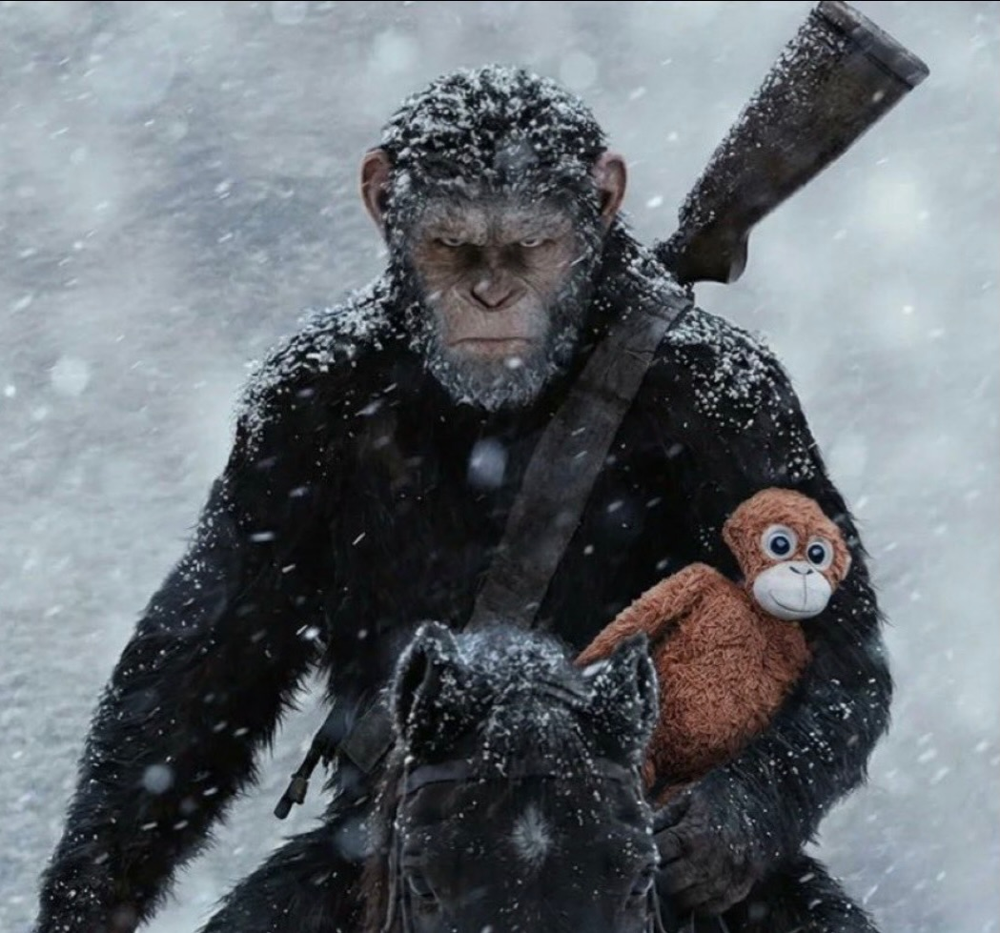

Punch-kun (Japanese: パンチくん, Hepburn: Panchi-kun; born July 26, 2025), or simply Punch, is a baby Japanese macaque at the Ichikawa City Zoo in Japan. He gained worldwide attention after clipping to a large orangutan stuffed toy, and his rise in popularity brought record crowds to the zoo beginning in February 2026.
Born on July 26, 2025, Punch was named after Monkey Punch, the mangaka behind Lupin the Third. His mother abandoned him shortly after birth, and zoo staff stepped in to hand‑raise him with a baby bottle and round‑the‑clock care. On January 19, 2026, he was introduced to the zoo’s Monkey Mountain—a troop of around sixty other macaques—but without a maternal figure he initially struggled to fit in, showing signs of anxiety and occasional isolation. Keepers described him as mentally strong despite occasional ostracism, and one viral clip showed another monkey pushing him away.
To aid his socialization and growth, zookeepers provided Punch with a Djungelskog orangutan plushie from IKEA, which he treated as a surrogate mother. By February 23, 2026, zoo officials reported that he was playing with other monkeys and eating independently without help from caretakers.
The zoo’s online post on February 5, 2026, detailing Punch’s backstory went viral overnight. Images and videos of the baby macaque with his plushie spread across Japan and the globe, accompanied by the hashtag #がんばれパンチ (#HangInTherePunch). Fans dubbed the toy “Oran‑Mama” and “Oran‑Mother.”
The surge of interest led to unprecedented lines outside the Ichikawa City Zoo, prompting apologies for entry delays. On February 17, IKEA donated 33 more stuffed animals to Punch, and the Djungelskog orangutan quickly sold out in several countries, fetching as much as $350 on secondary markets. Google even added a search animation with a playful monkey icon and cascading pink hearts for queries about Punch.
Op‑eds reflected on why Punch’s story resonated so deeply. USA Today’s Louie Villalobos wrote that Punch “reminds us of the loneliness and sadness we’ve felt in our lives… but he is also teaching us that there is always hope through perseverance.” Mary McNamara of the Los Angeles Times shared that her daughter typed “I am Punch and he is me” into a family chat, a sentiment McNamara suggested many shared. Today.com noted social media messages offering sympathy and solidarity—“We’re ALL Punch’s family now” and “We’re not okay.”